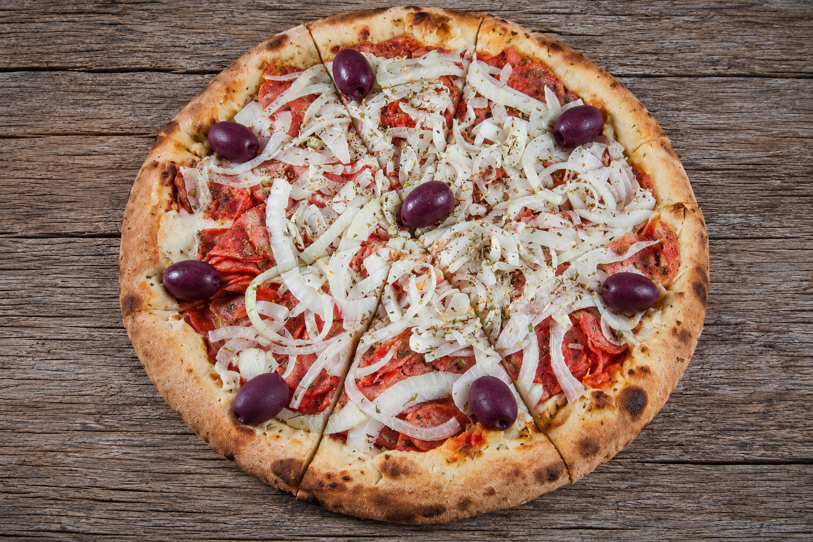
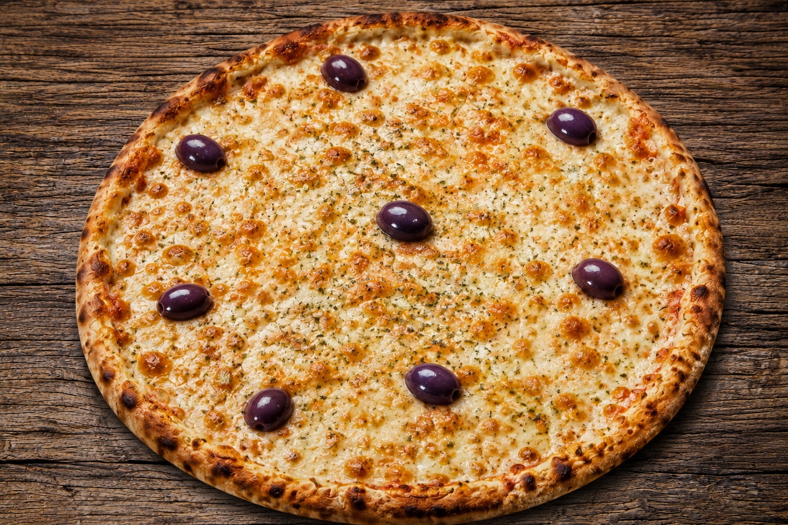
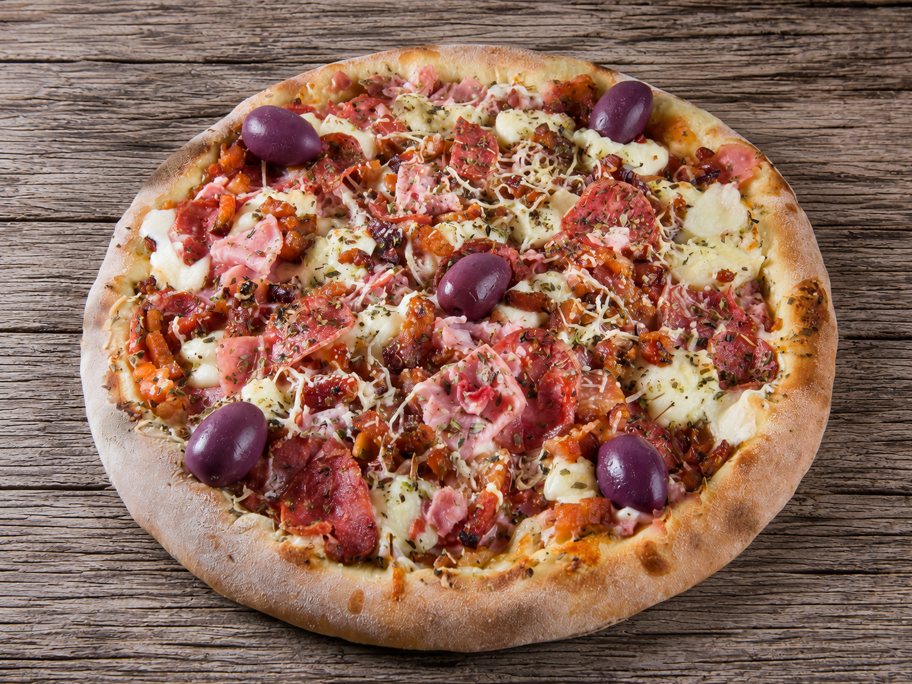
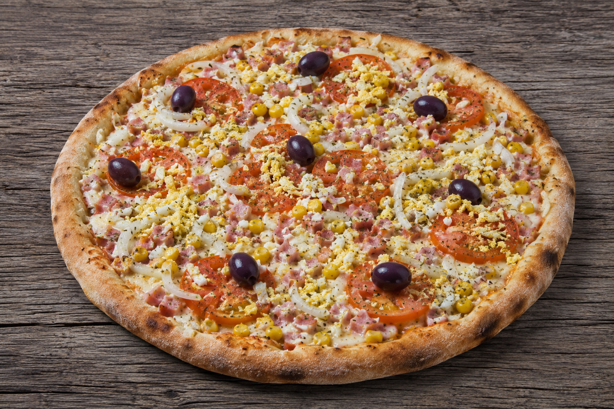
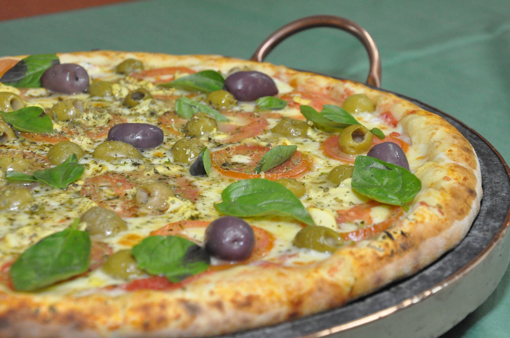
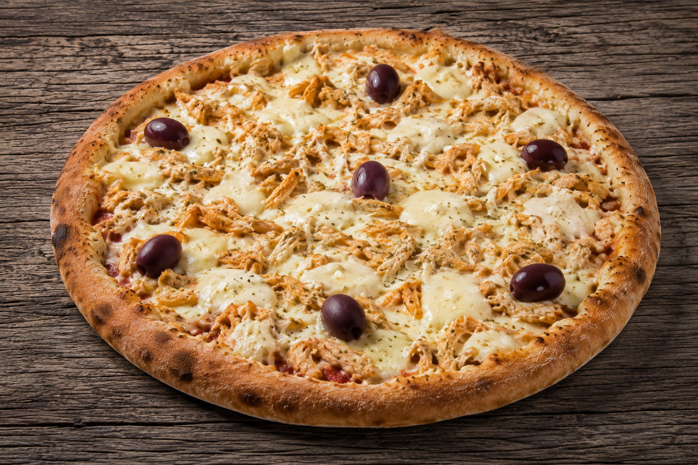
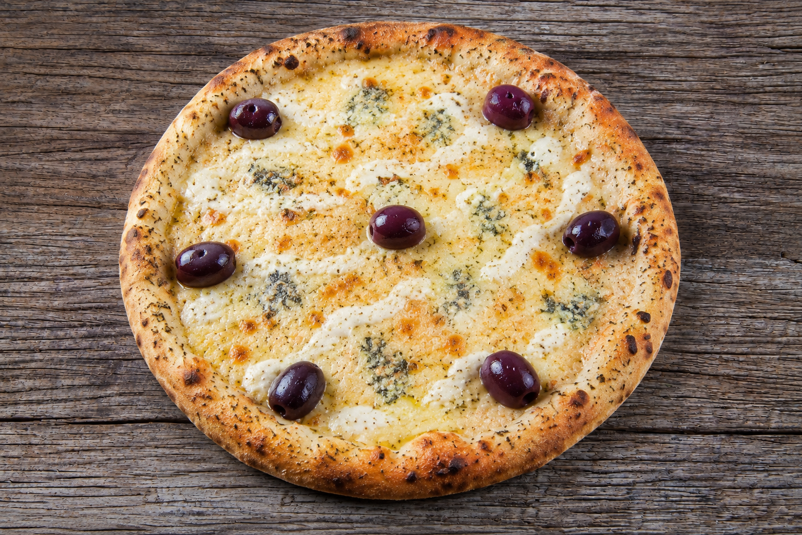

Calabresa
Calabresa bem dourada e cebola em uma combinação clássica, intensa e cheia de personalidade.
Escolha uma categoria e descubra cada sabor. Todas as listas ficam disponíveis na mesma página para uma navegação simples e rápida.
Nas pizzas salgadas, ingredientes recorrentes da casa — como molho de tomate, orégano e azeitonas chilenas — não são repetidos mecanicamente em todas as descrições. Nas pizzas doces, todas são preparadas na massa doce especial e levam borda de doce de leite.
As campeãs de preferência da Jardins, agora em destaque com fotos.

Calabresa bem dourada e cebola em uma combinação clássica, intensa e cheia de personalidade.

Muçarela generosa e bem derretida, o clássico absoluto para quem valoriza simplicidade e sabor.

Presunto, calabresa e bacon com muçarela, Catupiry® e parmesão — uma combinação farta e marcante, com assinatura Jardins.

Presunto, muçarela, cebola e ovos em uma receita tradicional, generosa e equilibrada.

Muçarela, parmesão, tomate fresco e manjericão em uma combinação aromática, leve e atemporal.

Frango delicadamente temperado envolvido pela cremosidade inconfundível do Catupiry®.

Catupiry®, provolone, gorgonzola e muçarela em uma mistura intensa, cremosa e irresistível.
Receitas tradicionais que fazem parte da história da casa.
Muçarela, cebola, alho dourado no azeite e parmesão, formando uma pizza aromática e cheia de personalidade.
Atum, palmito e ovos cobertos por muçarela, com cebola trazendo equilíbrio e frescor à combinação.
Catupiry® cremoso, tomate fresco, champignon e parmesão em uma receita delicada e envolvente.
Muçarela, bacon e parmesão em uma combinação defumada, crocante e muito saborosa.
Calabresa moída, muçarela, cebola e bacon em uma receita intensa e bem temperada.
Presunto, muçarela e tomate fresco em um clássico reconfortante e sempre certeiro.
Carne moída temperada, Catupiry®, cebola e ovos em uma combinação farta e cheia de identidade.
Calabresa e cebola cobertas com muçarela em uma receita simples, generosa e muito brasileira.
Brócolis, muçarela e bacon em uma combinação cremosa, equilibrada e cheia de textura.
Catupiry® e muçarela juntos em uma pizza extremamente cremosa e delicada.
Gorgonzola e muçarela em uma combinação intensa, elegante e marcante.
Lombo canadense e Catupiry® em uma combinação suave, cremosa e muito equilibrada.
Muçarela, milho e bacon em uma receita cremosa, levemente adocicada e muito acolhedora.
Muçarela, tomate fresco e parmesão em um clássico de inspiração italiana, leve e aromático.
Palmito, muçarela e ovos em uma combinação delicada, cremosa e muito saborosa.
Presunto, milho, Catupiry®, creme de leite e muçarela em uma receita rica, cremosa e reconfortante.
Linguiça toscana defumada e moída com muçarela em uma pizza rústica e cheia de sabor.
Catupiry®, provolone e muçarela em uma combinação cremosa, equilibrada e envolvente.
Combinações especiais, cremosas e marcantes.
Calabresa moída, Catupiry®, cebola e bacon com um toque de Tabasco, criando uma pizza intensa e cheia de personalidade.
Frango, milho, Catupiry® e bacon em uma combinação generosa, cremosa e muito reconfortante.
Calabresa e cebola cobertas com Catupiry® e finalizadas com manjericão fresco — intensa, cremosa e aromática.
Frango, Catupiry®, cebola e bacon em uma receita farta, cremosa e cheia de sabor.
Catupiry® Original em toda a sua cremosidade, para quem aprecia sabor puro e textura aveludada.
Palmito, muçarela e generosas porções de Catupiry® em uma combinação delicada e irresistivelmente cremosa.
Escarola, muçarela, calabresa e cebola com parmesão — uma receita especial que nasceu da inspiração de um cliente querido.
Lombo canadense, ovos, Catupiry® e muçarela em uma combinação rica, cremosa e equilibrada.
Muçarela de búfala, peito de peru, tomate e ricota em uma opção mais leve, fresca e delicada.
Palmito, atum, tomate seco, muçarela e ricota, com alho, parmesão e cebola — uma combinação completa e surpreendente.
Shimeji puxado no vinho branco com Catupiry® e tomate picado, criando uma pizza aromática, cremosa e sofisticada.
Ervilha, palmito, presunto, ovos e cebola cobertos por muçarela em uma receita generosa e tradicional.
Filé mignon ao molho especial com Catupiry® e batata palha, em uma pizza cremosa, rica e indulgente.
Linguiça típica bragantina, muçarela, cebola e tomate seco — uma homenagem saborosa à identidade da cidade.
Calabresa moída, pimentões, champignon, Catupiry®, muçarela e cebola em uma combinação farta e cheia de personalidade.
Pepperoni e muçarela em uma pizza intensa, levemente picante e irresistivelmente aromática.
Ingredientes de maior valor agregado em receitas sofisticadas.
Catupiry®, tomate seco, champignon e palmito em uma combinação cremosa, elegante e cheia de textura.
Agrião fresco coberto com muçarela e delicadas fatias de queijo Brie especial, em uma combinação cremosa, elegante e cheia de contraste.
Berinjela, muçarela, filés de anchova peruana e pimentões em uma combinação intensa, mediterrânea e cheia de personalidade.
Muçarela de búfala, parmesão, tomates frescos, tomate seco e manjericão fresco em uma receita aromática, delicada e sofisticada.
Cogumelo Paris, shitake e shimeji salteados na manteiga, com cebolas ao vinho tinto, muçarela e manjericão fresco.
Carne seca desfiada, purê de mandioquinha e muçarela em uma combinação cremosa, marcante e profundamente brasileira.
Peito de peru, muçarela e bacon com a escolha entre banana ou abacaxi, criando um contraste doce-salgado muito especial.
Gorgonzola, Catupiry®, provolone e muçarela com cubos de filé mignon puxados no azeite — rica, cremosa e sofisticada.
Peito de peru, Catupiry®, muçarela, champignon, palmito e bacon com parmesão em uma receita farta e refinada.
Muçarela, Catupiry®, champignon, pepperoni e pimentões em uma combinação intensa, colorida e cheia de personalidade.
Muçarela de búfala, parmesão, gorgonzola, provolone, Catupiry® e ricota em uma verdadeira celebração de queijos.
Peito de peru, champignon, creme de leite, muçarela e cebola em uma receita cremosa e com a identidade da casa.
Presunto Parma e muçarela de búfala em uma combinação minimalista, delicada e elegante.
Muçarela, Brie e presunto Parma finalizados com fios de mel e delicados toques de geleia de figo ou damasco.
Frango defumado, Catupiry®, ricota, muçarela, tomate e bacon em uma combinação completa, cremosa e muito especial.
Receitas que valorizam vegetais, frescor e equilíbrio.
Abobrinha refogada no azeite com muçarela e parmesão em uma pizza leve, aromática e delicada.
Alho-poró e muçarela em uma combinação suave, aromática e elegante.
Escarola, milho, palmito e muçarela em uma receita leve, colorida e muito equilibrada.
Berinjela, muçarela, parmesão e alho dourado em uma combinação rústica, aromática e cheia de sabor.
Brócolis, muçarela, carne moída temperada e bacon em uma versão mais intensa e generosa do clássico vegetal.
Escarola, muçarela, cebola e bacon em uma pizza fresca, saborosa e muito equilibrada.
Muçarela, parmesão, tomate, tomate-cereja e manjericão fresco em uma versão ainda mais vibrante da Marguerita.
Muçarela, rúcula e tomate seco em uma combinação fresca, aromática e de sabor marcante.
Muçarela de búfala, abobrinha preparada no azeite, tomate-cereja, parmesão e manjericão fresco em uma combinação leve, aromática e cheia de frescor.
Muçarela de búfala, corações de alcachofra, presunto Parma e rúcula em uma combinação fresca, elegante e sofisticada.
Combinações especiais para quem aprecia sabores do mar.
Muçarela, anchovas peruanas e parmesão em uma combinação intensa, salgada e muito tradicional.
Atum sólido, cebola e parmesão em uma pizza clássica, marcante e equilibrada.
Lascas de bacalhau Gadus Morhua puxadas no azeite com tomate, cebola, ovos e pimentões — rica, tradicional e cheia de personalidade.
Camarão rosa à baiana, muçarela e Catupiry® em uma combinação cremosa, intensa e cheia de sabor.
Camarão rosa puxado no azeite com muçarela, champignon, palmito e Catupiry® em uma receita sofisticada e generosa.
Camarão rosa puxado no azeite, muçarela de búfala, pimentões coloridos e cebola em uma combinação leve, elegante e aromática.
Todas são preparadas na massa doce especial e levam borda de doce de leite.
Banana com açúcar e canela sobre uma base cremosa de muçarela e creme de leite.
Coco ralado, leite condensado e chocolate branco sobre uma base cremosa e delicada.
Chocolate nobre blend com creme de leite, finalizado com granulado para aquele clássico sabor de brigadeiro.
Chocolate nobre blend com creme de leite em uma versão simples, intensa e extremamente cremosa.
Muçarela e goiabada cremosa em um dos encontros mais clássicos entre doce e salgado.
Nutella® generosa finalizada com morangos frescos ou banana, em duas combinações igualmente irresistíveis.
Chocolate branco cremoso com pedaços de bombom Ouro Branco, unindo maciez e crocância.
Chocolate nobre blend com morangos e granulado, combinando cremosidade, frescor e textura.
Chocolate nobre blend com pedaços de bombom Sonho de Valsa, em uma combinação cremosa e crocante.